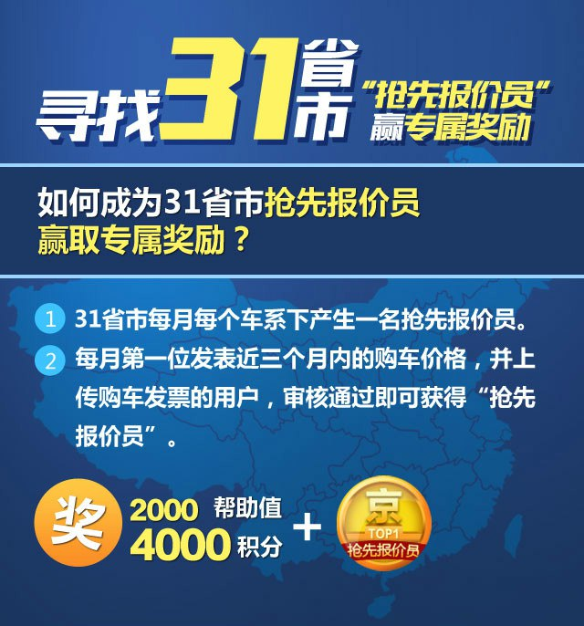
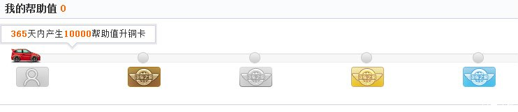

争做31省市“抢先报价员” 发表车主价格 赢专属奖励
来源：23移动2
日期：2024/3/11
作者：杜明川 阅读数：202301191211
很久以前，我们发现不同地区、不同商家、不同时间段，汽车市场的价格始终在变，车主在购车前通过不同的渠道了解价格，但始终没有放心的价格参考。
为了解决这一难题，汽车之家研发了车主价格。通过收集真实车主购车价格，去伪存真，还原给选车网友一个真实的价格参考产品。
#寻找31省市“抢先报价员”#活动上线，赶快来抢！
上传三个月内购车发票，通过审核即可获得帮助值（帮助值可升级家人卡，获取特权，多项福利等您拿）、“真实报价员”勋章！如您是当月该地区该车系首发价格，更有机会成为“抢先报价员”，抢先报价员勋章，机会多多，赶快来抢！

【31省市有哪些？】*由于港、澳、台地区购车价格与内地差距较大，所以不在本次活动征集范围内。
- 直辖市：
-
北京、天津、上海、重庆
- 省：
-
河北、江苏、浙江、安徽、山东、河南、湖北、湖南、广东、四川、海南、
贵州、云南、陕西、甘肃、青海、台湾、山西、辽宁、吉林、黑龙江、福建、江西
- 自治区：
- 广西、内蒙、西藏、宁夏、新疆
【活动时间】
2023年3月1日-2023年3月31日
【注意事项】
1、帮助值是什么？怎么使用？如何通知我已经获得？
帮助值是汽车之家用户通过发表优质的帖子、口碑、问答及提交的价格获得帮助值，根据您每年获得的帮助值数量，评判保级或进一步升级，升级后可享受到更大的特权。

特别声明：
近期还将会推出家人卡用户抽奖活动！家人卡等级越高，中奖几率越大！多重好礼等您赢取，更有新版炫酷车标首次发放（纯金属的哦）。
速来发表三个月内带发票的价格，赢取帮助值升级家人卡吧！抢先一步，为赢取新版炫酷车标做好准备吧！点我了解抽奖详情。
2、我发表了价格，为什么看不到？
价格发表后是未审核状态，工作人员将在三个工作日内完成审核（节假日顺延），审核后的价格可外展。
【活动规则】
- 填写本人购车价格，上传真实购车发票，通过工作人员审核
-
购车时间以上传发票的开票时间为准，发票上的价格、购车人、经销商信息请勿遮挡
- 重复车型请勿重复发表，同一车型每人只允许发表一篇价格
【获奖规则与条件】
- 发表真实购车价格（未上传发票），通过审核后奖励“家的报价员“勋章；
-
发表真实购车价格，上传购车发票（发票可续传），购车时间超过3个月，通过审核后奖励“真实报价员”勋章；
-
发表真实购车价格，上传购车发票（发票可续传），购车时间为3个月内，通过审核后奖励2000帮助值，“真实报价员”勋章；
-
发表真实购车价格，上传购车发票（发布价格时需同时上传发票，续传无效），购车时间为3个月内，且为当月XX省市XX车系下第一位发表的车主（例：8月北京福克斯第一位发表），通过审核后奖励2000帮助值，“真实报价员”勋章，“抢先报价员”勋章。
【关于抢先报价员及其勋章说明】
抢先报价员按照31省市区域划分，每月每个车系下产生一个抢先报价员，抢先报价员拥有专属勋章，勋章永久拥有。